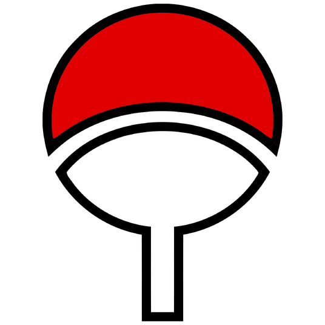

Кланы в Наруто
Кланы (一族, "Ichizoku") — объединения шиноби, связанные родственными узами и стилем боя, что может подразумевать наличие Хидендзюцу, техник, секрет исполнения которых циркулирует лишь внутри клана, или же Кеккей Генкай, способностей, передающихся по наследству.
Зачастую кланы населяют собственные селения, но чаще проживают в Какурезато, к пактам о создании которых присоединились.
Учиха
Клан Учи́ха (うちは一族, "Uchiha Ichizoku") — один из четырёх благородных кланов Конохи[1], обретший известность из-за своего уникального Кеккей Генкай Додзюцу, Шарингана.[2] Участвовав в основании Конохагакуре в прошлом, клан становился всё более и более отдалённым от основной части селения, росла дискриминация, что вылилось в уничтожение клана Учиха.
Немногие Учиха дожили до настоящего времени.
Сарутоби
Клан Саруто́би (猿飛一族, Sarutobi Ichizoku) — один из кланов Конохагакуре. Наиболее известным членом является Сарутоби Хирузен.
Все Шиноби клана верят в Хи но Иши.
Сенджу
Клан Се́нджу (千手一族, "Senju Ichizoku"), также известный как "Клан лесных Сенджу" (森の千手一族, "Mori no Senju Ichizoku")[1] — один из сильнейших кланов мира, клан-сооснователь Конохагакуре.
Несмотря на то, что он больше не существует в виде клана, его влияние продолжает формировать политику Конохи.
Хьюга
Клан Хью́га (日向閥族, Hyuuga Ichizoku) — один из четырёх благородных кланов Конохагакуре но Сато.[1] Все члены клана с рождения обладают Бьякуганом, Кеккей Генкай, предоставляющим им расширенное поле зрения и возможность видеть сквозь твёрдые предметы, а также систему чакры живых существ.
Члены клана Хьюга обладают уникальной способностью высвобождать чакру в любом тенкетсу в их телах.
Кланы в Наруто
Клан Учиха
Клан Сарутоби
Клан Сенджу
Клан Хьюга